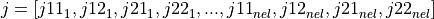

Element Stiffness Matrix¶
The stiffness matrices are integrated numerically where the number of
integration points is fixed for each element type by the parameter npts.
The element has a number of dimensions defined by ndim. Suppose we have
nel 2-D elements (ndim=2) for which the stiffness matrix has to be
calculated, the following should be defined:
